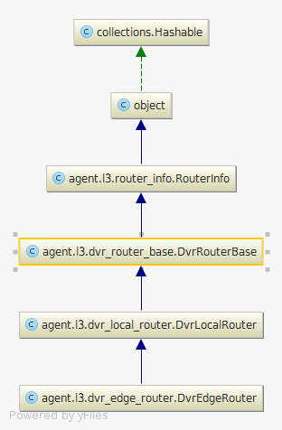

1 commit 701b119d9ce880940b85f9143e97e05c1c2378a0
2 Author: Carl Baldwin <carl.baldwin@hp.com>
3 Date: Thu Jul 9 22:05:05 2015 +0000
4
5 Create and stop passing around snat_ports
6
7 The one thing that I see that the two dvr classes have in common is
8 the ability to map internal ports to snat ports. The dvr local router
9 needs it to set up a redirect to the central part. The central part
10 needs it to create the port for the internal network.
11
12 This change renames the mapping method to and
13 removes snat_ports as an argument to two methods because it is a quick
14 to get it from the router dict and passing it around
15 just tangles things up.
16
17 Change-Id: Icc099c1a97e3e68eeaf4690bc83167ba30d8099a
18 ---
19 neutron/agent/l3/dvr_edge_router.py | 14 +++++---------
20 neutron/agent/l3/dvr_local_router.py | 37 ++++++++-----------------------------
21 neutron/agent/l3/dvr_router_base.py | 42 ++++++++++++++++++++++++++++++++++++++++++
22 neutron/tests/unit/agent/l3/test_agent.py | 34 ++++++++++++++++++++--------------
23 4 files changed, 75 insertions(+), 52 deletions(-)
Diagram for the newly created class:

24
25 diff --git a/neutron/agent/l3/dvr_edge_router.py b/neutron/agent/l3/dvr_edge_router.py
26 index d54015d..72e6412 100644
27 --- a/neutron/agent/l3/dvr_edge_router.py
28 +++ b/neutron/agent/l3/dvr_edge_router.py
29 @@ -34,8 +34,7 @@ class DvrEdgeRouter(dvr_local_router.DvrLocalRouter):
30 super(DvrEdgeRouter, self).external_gateway_added(
31 ex_gw_port, interface_name)
32 if self._is_this_snat_host():
33 - snat_ports = self.get_snat_interfaces()
34 - self._create_dvr_gateway(ex_gw_port, interface_name, snat_ports)
35 + self._create_dvr_gateway(ex_gw_port, interface_name)
36
37 def external_gateway_updated(self, ex_gw_port, interface_name):
38 if not self._is_this_snat_host():
39 @@ -71,8 +70,7 @@ class DvrEdgeRouter(dvr_local_router.DvrLocalRouter):
40 if not self._is_this_snat_host():
41 return
42
43 - snat_ports = self.get_snat_interfaces()
44 - sn_port = self._map_internal_interfaces(port, snat_ports)
45 + sn_port = self.get_snat_port_for_internal_port(port)
46 if not sn_port:
47 return
48
49 @@ -93,8 +91,7 @@ class DvrEdgeRouter(dvr_local_router.DvrLocalRouter):
50 if not self.ex_gw_port:
51 return
52
53 - snat_ports = self.get_snat_interfaces()
54 - sn_port = self._map_internal_interfaces(port, snat_ports)
55 + sn_port = self.get_snat_port_for_internal_port(port)
56 if not sn_port:
57 return
58
59 @@ -110,12 +107,11 @@ class DvrEdgeRouter(dvr_local_router.DvrLocalRouter):
60 self.driver.unplug(snat_interface, namespace=ns_name,
61 prefix=prefix)
62
63 - def _create_dvr_gateway(self, ex_gw_port, gw_interface_name,
64 - snat_ports):
65 + def _create_dvr_gateway(self, ex_gw_port, gw_interface_name):
66 """Create SNAT namespace."""
67 snat_ns = self.create_snat_namespace()
68 # connect snat_ports to br_int from SNAT namespace
69 - for port in snat_ports:
70 + for port in self.get_snat_interfaces():
71 # create interface_name
72 interface_name = self.get_snat_int_device_name(port['id'])
73 self._internal_network_added(
74 diff --git a/neutron/agent/l3/dvr_local_router.py b/neutron/agent/l3/dvr_local_router.py
75 index 21cc387..1336fd2 100755
76 --- a/neutron/agent/l3/dvr_local_router.py
77 +++ b/neutron/agent/l3/dvr_local_router.py
78 @@ -19,7 +19,7 @@ from oslo_log import log as logging
79 from oslo_utils import excutils
80
81 from neutron.agent.l3 import dvr_fip_ns
82 -from neutron.agent.l3 import router_info as router
83 +from neutron.agent.l3 import dvr_router_base
84 from neutron.agent.linux import ip_lib
85 from neutron.common import constants as l3_constants
86 from neutron.common import exceptions
87 @@ -31,12 +31,9 @@ LOG = logging.getLogger(__name__)
88 MASK_30 = 0x3fffffff
89
90
91 -class DvrLocalRouter(router.RouterInfo):
92 +class DvrLocalRouter(dvr_router_base.DvrRouterBase):
93 def __init__(self, agent, host, *args, **kwargs):
94 - super(DvrLocalRouter, self).__init__(*args, **kwargs)
95 -
96 - self.agent = agent
97 - self.host = host
98 + super(DvrLocalRouter, self).__init__(agent, host, *args, **kwargs)
99
100 self.floating_ips_dict = {}
101 # Linklocal subnet for router and floating IP namespace link
102 @@ -49,9 +46,6 @@ class DvrLocalRouter(router.RouterInfo):
103 floating_ips = super(DvrLocalRouter, self).get_floating_ips()
104 return [i for i in floating_ips if i['host'] == self.host]
105
106 - def get_snat_interfaces(self):
107 - return self.router.get(l3_constants.SNAT_ROUTER_INTF_KEY, [])
108 -
109 def _handle_fip_nat_rules(self, interface_name, action):
110 """Configures NAT rules for Floating IPs for DVR.
111
112 @@ -200,17 +194,6 @@ class DvrLocalRouter(router.RouterInfo):
113 subnet_id,
114 'add')
115
116 - def _map_internal_interfaces(self, int_port, snat_ports):
117 - """Return the SNAT port for the given internal interface port."""
118 - fixed_ip = int_port['fixed_ips'][0]
119 - subnet_id = fixed_ip['subnet_id']
120 - match_port = [p for p in snat_ports if
121 - p['fixed_ips'][0]['subnet_id'] == subnet_id]
122 - if match_port:
123 - return match_port[0]
124 - else:
125 - LOG.error(_LE('DVR: no map match_port found!'))
126 -
127 @staticmethod
128 def _get_snat_idx(ip_cidr):
129 """Generate index for DVR snat rules and route tables.
130 @@ -305,8 +288,7 @@ class DvrLocalRouter(router.RouterInfo):
131 if not ex_gw_port:
132 return
133
134 - snat_ports = self.get_snat_interfaces()
135 - sn_port = self._map_internal_interfaces(port, snat_ports)
136 + sn_port = self.get_snat_port_for_internal_port(port)
137 if not sn_port:
138 return
139
140 @@ -317,8 +299,7 @@ class DvrLocalRouter(router.RouterInfo):
141 if not self.ex_gw_port:
142 return
143
144 - snat_ports = self.get_snat_interfaces()
145 - sn_port = self._map_internal_interfaces(port, snat_ports)
146 + sn_port = self.get_snat_port_for_internal_port(port)
147 if not sn_port:
148 return
149
150 @@ -348,14 +329,13 @@ class DvrLocalRouter(router.RouterInfo):
151 ip_wrapr = ip_lib.IPWrapper(namespace=self.ns_name)
152 ip_wrapr.netns.execute(['sysctl', '-w',
153 'net.ipv4.conf.all.send_redirects=0'])
154 - snat_ports = self.get_snat_interfaces()
155 for p in self.internal_ports:
156 - gateway = self._map_internal_interfaces(p, snat_ports)
157 + gateway = self.get_snat_port_for_internal_port(p)
158 id_name = self.get_internal_device_name(p['id'])
159 if gateway:
160 self._snat_redirect_add(gateway, p, id_name)
161
162 - for port in snat_ports:
163 + for port in self.get_snat_interfaces():
164 for ip in port['fixed_ips']:
165 self._update_arp_entry(ip['ip_address'],
166 port['mac_address'],
167 @@ -372,9 +352,8 @@ class DvrLocalRouter(router.RouterInfo):
168 to_fip_interface_name = (
169 self.get_external_device_interface_name(ex_gw_port))
170 self.process_floating_ip_addresses(to_fip_interface_name)
171 - snat_ports = self.get_snat_interfaces()
172 for p in self.internal_ports:
173 - gateway = self._map_internal_interfaces(p, snat_ports)
174 + gateway = self.get_snat_port_for_internal_port(p)
175 internal_interface = self.get_internal_device_name(p['id'])
176 self._snat_redirect_remove(gateway, p, internal_interface)
177
178 diff --git a/neutron/agent/l3/dvr_router_base.py b/neutron/agent/l3/dvr_router_base.py
179 new file mode 100644
180 index 0000000..0c872c4
181 --- /dev/null
182 +++ b/neutron/agent/l3/dvr_router_base.py
183 @@ -0,0 +1,42 @@
184 +# Licensed under the Apache License, Version 2.0 (the "License"); you may
185 +# not use this file except in compliance with the License. You may obtain
186 +# a copy of the License at
187 +#
188 +# http://www.apache.org/licenses/LICENSE-2.0
189 +#
190 +# Unless required by applicable law or agreed to in writing, software
191 +# distributed under the License is distributed on an "AS IS" BASIS, WITHOUT
192 +# WARRANTIES OR CONDITIONS OF ANY KIND, either express or implied. See the
193 +# License for the specific language governing permissions and limitations
194 +# under the License.
195 +
196 +from oslo_log import log as logging
197 +
198 +from neutron.agent.l3 import router_info as router
199 +from neutron.common import constants as l3_constants
200 +from neutron.i18n import _LE
201 +
202 +LOG = logging.getLogger(__name__)
203 +
204 +
205 +class DvrRouterBase(router.RouterInfo):
206 + def __init__(self, agent, host, *args, **kwargs):
207 + super(DvrRouterBase, self).__init__(*args, **kwargs)
208 +
209 + self.agent = agent
210 + self.host = host
211 +
212 + def get_snat_interfaces(self):
213 + return self.router.get(l3_constants.SNAT_ROUTER_INTF_KEY, [])
214 +
215 + def get_snat_port_for_internal_port(self, int_port):
216 + """Return the SNAT port for the given internal interface port."""
217 + snat_ports = self.get_snat_interfaces()
218 + fixed_ip = int_port['fixed_ips'][0]
219 + subnet_id = fixed_ip['subnet_id']
220 + match_port = [p for p in snat_ports
221 + if p['fixed_ips'][0]['subnet_id'] == subnet_id]
222 + if match_port:
223 + return match_port[0]
224 + else:
225 + LOG.error(_LE('DVR: no map match_port found!'))
226 diff --git a/neutron/tests/unit/agent/l3/test_agent.py b/neutron/tests/unit/agent/l3/test_agent.py
227 index 5ad2e75..09416ba 100644
228 --- a/neutron/tests/unit/agent/l3/test_agent.py
229 +++ b/neutron/tests/unit/agent/l3/test_agent.py
230 @@ -337,7 +337,8 @@ class TestBasicRouterOperations(BasicRouterOperationsFramework):
231 if action == 'add':
232 self.device_exists.return_value = False
233
234 - ri._map_internal_interfaces = mock.Mock(return_value=sn_port)
235 + ri.get_snat_port_for_internal_port = mock.Mock(
236 + return_value=sn_port)
237 ri._snat_redirect_add = mock.Mock()
238 ri._set_subnet_arp_info = mock.Mock()
239 ri._internal_network_added = mock.Mock()
240 @@ -356,7 +357,8 @@ class TestBasicRouterOperations(BasicRouterOperationsFramework):
241 dvr_snat_ns.SNAT_INT_DEV_PREFIX)
242 elif action == 'remove':
243 self.device_exists.return_value = False
244 - ri._map_internal_interfaces = mock.Mock(return_value=sn_port)
245 + ri.get_snat_port_for_internal_port = mock.Mock(
246 + return_value=sn_port)
247 ri._snat_redirect_modify = mock.Mock()
248 ri.internal_network_removed(port)
249 ri._snat_redirect_modify.assert_called_with(
250 @@ -432,8 +434,7 @@ class TestBasicRouterOperations(BasicRouterOperationsFramework):
251 interface_name, ip_cidrs, **kwargs)
252 else:
253 ri._create_dvr_gateway.assert_called_once_with(
254 - ex_gw_port, interface_name,
255 - self.snat_ports)
256 + ex_gw_port, interface_name)
257
258 def _test_external_gateway_action(self, action, router, dual_stack=False):
259 agent = l3_agent.L3NATAgent(HOSTNAME, self.conf)
260 @@ -518,7 +519,8 @@ class TestBasicRouterOperations(BasicRouterOperationsFramework):
261
262 elif action == 'remove':
263 self.device_exists.return_value = True
264 - ri._map_internal_interfaces = mock.Mock(return_value=sn_port)
265 + ri.get_snat_port_for_internal_port = mock.Mock(
266 + return_value=sn_port)
267 ri._snat_redirect_remove = mock.Mock()
268 ri.external_gateway_removed(ex_gw_port, interface_name)
269 if not router.get('distributed'):
270 @@ -700,7 +702,7 @@ class TestBasicRouterOperations(BasicRouterOperationsFramework):
271 else:
272 self.assertIn(r.rule, expected_rules)
273
274 - def test__map_internal_interfaces(self):
275 + def test_get_snat_port_for_internal_port(self):
276 router = l3_test_common.prepare_router_data(num_internal_ports=4)
277 ri = dvr_router.DvrEdgeRouter(mock.sentinel.agent,
278 HOSTNAME,
279 @@ -714,13 +716,15 @@ class TestBasicRouterOperations(BasicRouterOperationsFramework):
280 'ip_address': '101.12.13.14'}]}
281 internal_ports = ri.router.get(l3_constants.INTERFACE_KEY, [])
282 # test valid case
283 - res_port = ri._map_internal_interfaces(internal_ports[0], [test_port])
284 - self.assertEqual(test_port, res_port)
285 - # test invalid case
286 - test_port['fixed_ips'][0]['subnet_id'] = 1234
287 - res_ip = ri._map_internal_interfaces(internal_ports[0], [test_port])
288 - self.assertNotEqual(test_port, res_ip)
289 - self.assertIsNone(res_ip)
290 + with mock.patch.object(ri, 'get_snat_interfaces') as get_interfaces:
291 + get_interfaces.return_value = [test_port]
292 + res_port = ri.get_snat_port_for_internal_port(internal_ports[0])
293 + self.assertEqual(test_port, res_port)
294 + # test invalid case
295 + test_port['fixed_ips'][0]['subnet_id'] = 1234
296 + res_ip = ri.get_snat_port_for_internal_port(internal_ports[0])
297 + self.assertNotEqual(test_port, res_ip)
298 + self.assertIsNone(res_ip)
299
300 def test_process_cent_router(self):
301 router = l3_test_common.prepare_router_data()
302 @@ -1953,7 +1957,9 @@ class TestBasicRouterOperations(BasicRouterOperationsFramework):
303 interface_name = ri.get_snat_int_device_name(port_id)
304 self.device_exists.return_value = False
305
306 - ri._create_dvr_gateway(dvr_gw_port, interface_name, self.snat_ports)
307 + with mock.patch.object(ri, 'get_snat_interfaces') as get_interfaces:
308 + get_interfaces.return_value = self.snat_ports
309 + ri._create_dvr_gateway(dvr_gw_port, interface_name)
310
311 # check 2 internal ports are plugged
312 # check 1 ext-gw-port is plugged